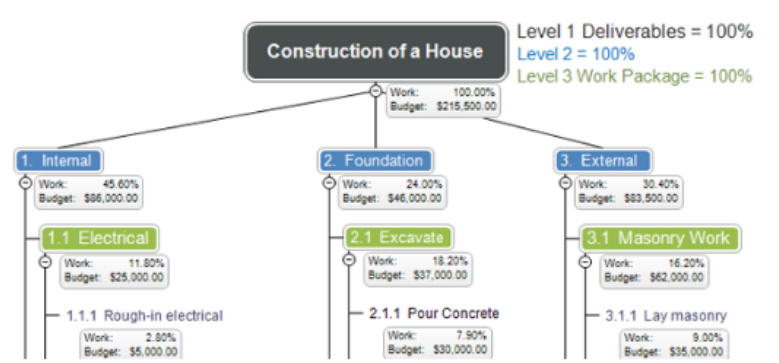
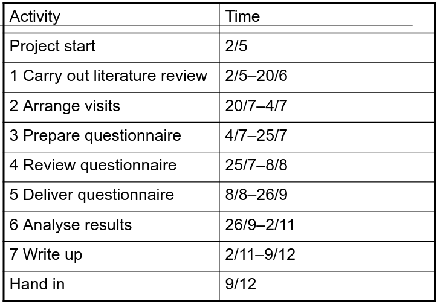
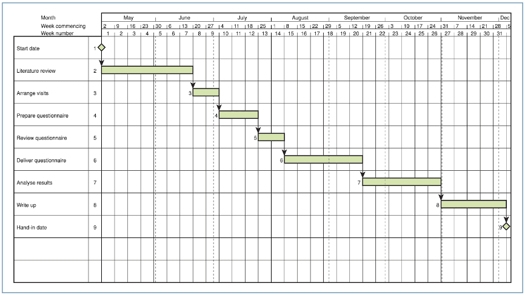
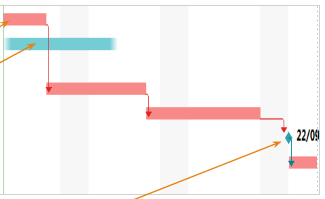

Management And Organizational Behaviour
Table of Contents
1 Definitions
- Organization: Is a systematic arrangement of people brought together to accomplish some specific purpose
2 Introduction to Teams
2.1 What's important
- People. People drive projects.
- Project managers are people
- Poor management leads to failure
- Teamwork is key
2.2 Teamwork
- Outperform individuals
- Can utilize individual's talents better
- Effective tool for motivation
- Involve
- Learn
- Social aspect
2.3 Critical Aspects of People Management
- Consistency: no favourites, no discrimination
- Respect: respect differences
- Inclusion: Involve people and their views
- Honesty: Be honest what is well and what is not
2.4 Team Selection
Information Gathering
- Provided by candidates
- Gained during an interview
- Recommendations and comments from others
- Sample a hiree's previous work
Factors
- Application Domain Experience
- Platform experience
- Programming language experience
- Problem solving ability
- Education background
- Communication ability
- Adaptability
- Attitude
- Personality
2.5 Motivation
- A manager should motivate people that work on a project
- Motivation is complex, but it is based on:
- Basic needs: food, sleep, etc.
- Personal needs: respect, self-esteem, etc.
- Social needs: be accepted, be tolerated, etc.
Maslow's needs (in order of importance)
- Physiological needs
- Safety needs
- Social needs
- Esteem needs
2.6 Personality Types (Sommerville)
- Needs hierarchy is an over-simplification of motivation
- Should also take into consideration personality types:
- Task-oriented: work itself is the motivator
- Self-oriented: work is a means to an end, e.g. get rich
- Interaction-oriented: presence and action with co-workers
2.7 Motivation Balance
- Individuals change and so can their motivation
- Personal circumstances and external events can be a contributor
- The group in which you work is perhaps one of the biggest motivators
2.8 Group Work
- Usually Software Engineering is a group activity
- Group interaction is key
- Flexibility in group composition is limited
Factors
- Group Composition: should contain members with different motivations.
- Task-oriented: everyone wants to do their own thing
- Self-oriented: everyone want to be the boss
- Interaction-oriented: too much chatting, not enough work
- Group Cohesiveness: group is more important that individuals
- Group quality standards can be developed
- Work closely together improves lack of ignorance
- Learn from each other
- Improve by social events, team-building activities, etc.
- Group Communications: essential aspect, also improves cohesion. Important factors:
- Group size
- Group structure
- Group composition
- The physical work environment
- Group Organization: Small companies may have self organizing groups, large companies may have hierarchical structure
2.9 Informal Groups
- Act as whole, come to consensus on decisions affecting the system
- Leader serves as an external interface, does not allocate work
- Work is distributed by the group itself
- This kind of group works when everyone is experienced
3 Time Planning
3.1 Benefits of planning
Analysis of the project
- Reveal opportunities for improvement
- Reveal possible problem preventions
- Set out a basis on how the project will proceed
- The benefits are realised when they are communicated
3.2 Work Breakdown Structure (WBS)
- Breakdown large activities into smaller (manageable) units
- Gives people responsibility for small tasks
- Better financial control of smaller units
- Provides a list of work packages
Example 1 of WBS:

Example 2 of WBS:

3.3 Time Planning
- Key aspect of project management
- Assist the manager and the team to complete the project in a timely manner
Constructing a plan
- How long will it take to complete the project?
- How precise?
- How long did it take the last time?
- What could cause delays?
- What things could get in the ways?
Estimates are guesses
- Do not treat these in a scientific way
- Estimation continues on throughout the lifecycle of a project
- The closer to completion, the more accurate the estimate
- Examples of estimates:
Name Nature Role Accuracy Rough / finger-in-the-air / ballpark Much uncertainty as to what is involved Early check on feasibility Very low As-buts As above, but with some quantitative data Can be used for proposals Moderate Detailed estimates Some initial work is done to determine what problems will occur Proposals Moderate … to finish Much of the work is done, additional funding is needed Additional fund request High
3.4 Gantt Charts
- Illustrates relationships between activities and time
- Horizontal bar is time
- Blocks are activities
Example Data Input:

Example Chart (Logical links are indicated by arrows):

- Positives:
- Communicates the plan
- Easy to make
- Readily understood
- Widely used
- Graphical interface for most project planning software
- Limitations:
- Difficult to update manually
- Does not equate time to cost
- Does not help in optimizing resource allocation
- Perceived as 'Reality' where in fact it is only an estimation
3.5 Tasks, Milestones and Deliverables
Definitions
- Task: an activity that contributes towards a deliverable
Milestone
- Synchronization point. Milestones mark moments when the project moves from one phase to another
- Is achieved when a key task is completed
- Are set along the critical path
- Why set milestones?
- Scheduling: Setting milestones can help to keep a project on schedule. Reaching milestones gives a change to re-evaluate the plan and identify problems.
- Celebrating Success: Give yourself a pat on the back, good work, celebrate a little.
- Project Evaluation: Re-evaluate what is going well, what problems are encountered, are tasks realistic, time estimation issues?
- Downside of milestones:
- Over-complication on small projects: Small projects may become too difficult when broken down too much. Keep it simple.
- Non-critical task slippage: take into consideration ALL tasks upon milestone reviews. Some important tasks might slip through.
Critical Path
- Longest sequences of activities that must be completed on time for the project to be delivered on time
- Critical path is the longest path to complete the project.
- To complete a project on time strictly monitor tasks and the critical path
- How to:
- All tasks are assigned a duration of time
- Connection between tasks are drawn, aka dependencies
- Calculate the critical path by following the tasks dependent path (connected)
- Add the durations of the tasks to get the critical path's time
Example (tasks are the blocks, critical path in red, 22/09 is a milestone):

4 High Performance Teams
4.1 Form-Storm-Norm-Perform Model
Assumptions
- Every group goes through some or all parts of the model
- The more people know each other and the more they work together the less time is spent through the first 3 stages
- Each stage is critical, if a team does not go through the first three stages then it may NEVER become a high performance team
Stages Overview
- Some team members go through stages at different times
- Teambuilding, ground rules, task understanding and members commitment is key to stage one
- Stages may happen in a random order or play out simultaneously
- It is important to know how to deal with Storming. How to handle conflict, e.g.: dialogue and mutual decision-making are the strongest methods.
Stage Breakdown
| Stage | Description | Team Behaviour |
|---|---|---|
| Forming | Group is still a set of individuals | - Polite |
| - Impersonal | ||
| - Guarded | ||
| - Muted | ||
| - Watchful | ||
| Storming | Conflicts, infighting over initial definitions, leadership and norms | - Confrontation |
| - Opting out | ||
| - Difficulties | ||
| - People leaving | ||
| - Demotivation | ||
| - Feeling stuck | ||
| Norming | Group establishes norms, rules of behaviour and practices | - Getting organised |
| - Systems and procedures | ||
| - Giving feedback | ||
| - Confronting issues | ||
| Performing | Group becomes mature and capable | - Closeness |
| - Resourceful | ||
| - Flexible | ||
| - Open | ||
| - Supportive | ||
| - Tolerant | ||
| - Sharing | ||
| - Effective |
4.2 Big Five Model (OCEAN Model)
- Describes the five fundamental personality traits
- Openness to experience: Conforming - Creative
- Conscientiousness: Detail-conscious - Unstructured
- Extraversion / Introversion: Same
- Agreeableness: Tough-minded - Agreeable
- Neuroticism: Confidence - Sensitive
4.3 Belbin Team Roles
Definition
- Used to identify people's behavioral strengths and weaknesses in the workplace. Use this information for:
- Build productive relationships
- Select and develop high performing teams
- Raise self-awareness and personal effectiveness
- Build trust and understanding
- Aid recruitment process
- The point is not to put people into identifiable boxes, but to understand one-self and other by using Belbin's framework
The 9 qualities of a perfect individual
- Out-going
- Organized
- Motivating
- Creative
- Hard-driving
- Objective
- Diplomatic
- Meticulous
- Knowledgeable
Why teams fail?
- Often it has to do with how people feel emotionally about themselves and others
- People find it difficult to deal with emotions and behavioral issues
Belbin's method, three questionnaires
- The self-perception form: determines preferred roles, and roles that should be avoided
- The observer's form: performed by at least 4 observers, goes beyond the subjective nature of self-perception
- The job observation form: identifies main personal characteristics required to fulfill a target role
Team Role Expert System, 9 Team Roles
- Each Team role has:
- Strengths
- Allowable weaknesses
- Non-allowable weaknesses
- Plant:
- Creative, Solves difficult problems
- Loses touch with everyday realities
- Resource Investigator:
- Enterprising, Quick to explore opportunities
- Weak in follow through
- Co-ordinator:
- Makes good use of group activities
- Manipulative
- Shaper:
- Driving and challenging
- Provocative, Aggressive
- Monitor Evaluator:
- Discerning and Objective
- Uninspiring, Slow-moving
- Teamworker:
- Co-operative, Averts friction
- Indecisive
- Implementer:
- Disciplined, Efficient, Practical
- Slow to see new possibilities
- Completer-Finisher:
- Painstaking, Conscientious
- Anxious, Reluctant to delegate
- Specialist:
- Single-minded, Professionally dedicated
- Limited in interest
5 Management
5.1 Management is considered art and science
- Some people are natural at it, some will always struggle
5.2 Why is there good and bad?
- Mostly because we are human
5.3 Motivating
- Pat on the back
- Talking
- Money (but not to everyone)
5.4 Three common characteristics
- Goal:
- People:
- Structure:
5.5 Performance
- Efficiency: Is essentially doing the thing right
- Effectiveness: Is essentially doing the thing the right way
6 Teams
6.1 People are the most important aspect of any project
6.2 Teamwork/Group Work
- Composition
- Interaction
- Cohesion
- Group Loyalties
- Communication
- Size
- Structure
- Composition
- Physical work environment
- Organisation
6.3 People Over Process
- Consistency
- Respect
- Inclusion
- Honesty
6.4 Selecting a Team
6.5 Hiring a Juggler
6.6 Staff selection
- Domain experience
- Platform experience
- Programming language experience
- Problem solving ability
- Education
- Communication
- Adaptability
- Attitude
- Personality
6.7 Human Needs
- Esteem needs
- Social needs
- Safety needs
- Psychological needs
6.8 Personality Types
- Task-oriented
- Self-oriented
- Interaction-oriented
6.9 Motivation balance
7 Management Mintzberg's Interpretation
7.1 Previous vague terms
- Planning
- Organizing
- Leading
- Controlling
7.2 Motto
- Mintzberg says that management is an art (a ‘human skill’) and it is therefore imperative for managers to learn continuously about their own situations.
7.3 Interpersonal Roles
- Figurehead
- Leader
- Liason
7.4 Informational Roles
- Monitor
- Disseminator
- Spokesperson
7.5 Decisional Roles
- Entrepreneur
- Disturbance Handler
- Resource Allocator
- Negotiator
8 Motivation
8.1 Mainly defined as:
- Direction of behaviour in an organization
- The effort or how hard people work
- The persistence displayed in meeting
8.2 Outcomes and Inputs
- Outcomes: Anything a person gets from a job. Examples include pay, autonomy, accomplishment
- Inputs: Anything a person contributes to the job. Examples include skills, knowledge, work behaviour
8.3 Motivation Equation
Inputs from Organizational members
- Time
- Effort
- Education
- Experience
- Skills
- Knowledge
- Work Behaviour
Performance
- Contribute to organization efficiency
- Effectiveness
Outcomes received by members
- Pay
- Job security
8.4 Frederick W.Taylor's Theory
8.5 Victor Vroom's Theory: Expectancy Theory
- Effort: Uses Expectancy moderator.
- Performance: Uses Instrumentality moderator.
- Outcomes: Uses Valence moderator.
9 Needs
9.1 TODO Maslow
9.2 McClelland's Needs Theory
Approach
- First identify a person's needs on your team
- Structure your approach